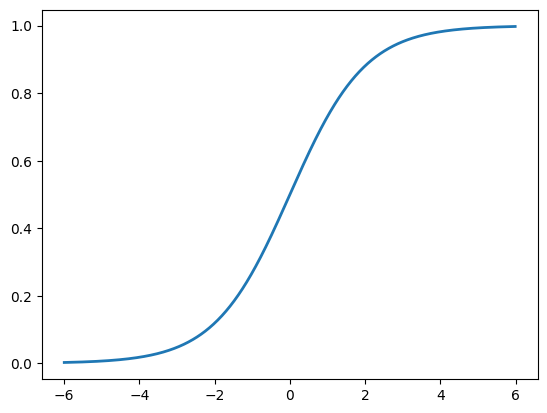
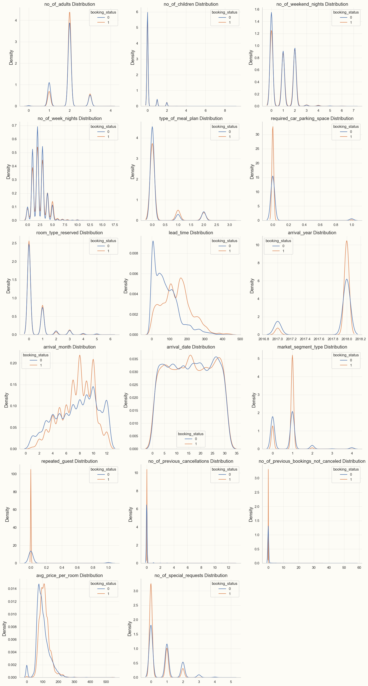
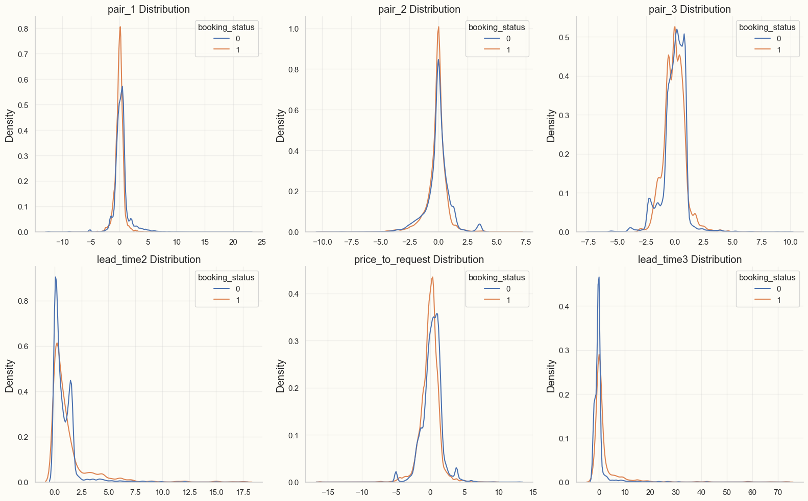

Introduction
In the past few months, I’ve sharpened my data science axe on three different Kaggle competitions: two tabular binary classification problems, and one tabular ordinal regression problem.
I’ve learned a lot about how to set up a full data pipeline, and much of what I learned comes from this notebook.
You could classify what I’ve learned into three categories: tools, techniques for EDA and feature engineering, and rare event modeling.
New Tools
I’ve learned about XGBoost, which seems to be a favored boosting method on Kaggle. In the past, I’ve had trouble getting boosting to match random forests in performance, but I also learned about optuna, which is a framework for hyperparameter tuning. Together with optuna, I can now use XGBoost to get pretty good baseline performance.
New Techniques for EDA and Feature Engineering
One good way to start exploratory data analysis (EDA) is to produce pair plots for all the variables. This was already something I was doing. Sometimes, though, there are very many predictors, so it’s difficult to pick out information by eye from the pair plots. In that case, it helps to restrict to plots of the dependent variable against the predictors. I’ve also taken to computing Pearson corelation coefficients between the dependent variable and the predictors. For classification problems, it’s also helpful to model predictor distributions by class, as in the following image, which comes from a hotel bookings dataset: 
I look for graphs where the two distributions are noticeably different. In the above image, for example, the three most important features amenable to feature engineering seemed to be “avg_price_per_room”, “lead_time”, and “no_of_special_requests”. For feature engineering, it’s important to try some interactions and higher-order polynomial terms involving the most significant predictors. It’s worth investigating certain ratios between these predictors as well. To get great results, though, it’s also important to think about domain-specific combinations of predictors; for example, I tried to make 1) a “fussiness” variable which combined “no_of_special_requests” with “required_car_parking_space” and 2) a “cancellation rate” predictor. In the hotels dataset, though, this didn’t help too much.
The image below shows feature distributions for the most promising engineered features:

I think the best features are ones for which the distributions are different not only for the two target classes, but also different from other features already appearing in the dataset.
Rare Event Modeling
One of the competitions involved modeling the risk of credit card default for bank accounts. Another involved predicting a wine taster rating for different wines. In the former case, defaults were rare; in the latter case, there were very few wines that received a score of either 8 or 3 (maximum and minimum scores in the dataset, respectively). So I had to learn about methods to detect rare events. The problem with rare events is that a baseline model which predicts that the event doesn’t occur has a high accuracy. The rarity of the positive observations increases the variance of the predictors for the positive observations, so it becomes difficult to construct a model with a better accuracy than the baseline one.
The method I settled on was to ensemble: I divided the training data into about 100 data sets. Each data set had all of the positive observations, and a different subset of the negative observations. The result was that the classes were distributed more equally in the smaller datasets than in the original dataset. Then, I trained a classification (random forest) model on each of the 100 data sets separately, and took the mean prediction probability over the 100 models. This technique is known as “ensembling”: the idea is that each of the constituent models has a chance to learn something meaningful about what distinguishes some negative observations from the positive ones. If certain features keep appearing in the various models, then they will aggregate to an important feature in the ensemble. Another way of putting this is that we want to be close to the inflection point of the logistic function:
If we start at the distant asymptotes of the logistic function, then we will need very large coefficients in front of our predictors to produce a meaningful difference in probabilities. Then, a small amount of noise in that predictor can produce a very large change in probabilities.
In the end, the ensemble method will dramatically overrate the probabilities that it assigns to positive events, but usually we are more interested in accuracy or area under the ROC curve, so that the probability over-estimate can be compensated by a change in the threshold.
Conclusion
When I was revisiting my infant mortality project, I noticed that most of what I discussed above would have been very applicable to that project as well. For example, distribution plots would have helped me to engineer features that may have improved my models. In any case, looking back on my Kaggle competitions has helped me to appreciate how far I’ve come in my journey since November.